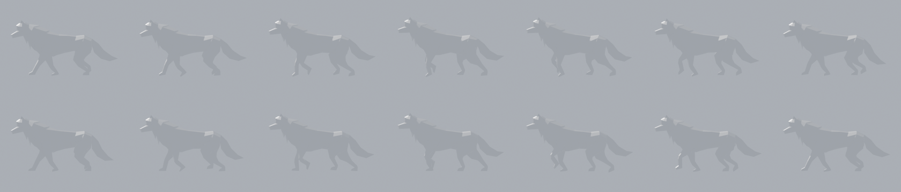

Le vrai problème venait du squelette de nos créatures (fait automatiquement) : les articulations des pattes n'étaient pas aux bons endroits et la peau était mal attachée aux os. J'ai refait le squelette des 4 pattes du loup (épaule, coude, poignet / hanche, genou, jarret, placés sur la forme réelle des pattes) et la façon dont la peau suit chaque os. Le mouvement des pattes vient d'un vrai cycle de marche de loup animé par un artiste (Quaternius, licence libre CC0).
Version 8 (rendu Blender) : la cuisse arrière balance 1,5 fois plus (hanche remise comme en v6). Version 7 : la hanche pivote aussi avec la patte arrière (pivot remonté au haut du bassin). Version 6 : comme la 5 mais sans le dandinement (roulis presque supprimé). Version 5 : l'épaule pivote avec la patte avant (pivot remonté à l'omoplate), le bassin et les épaules roulent à chaque pas ; profil, face, 3/4. Version 4 : mouvements à 85 % de la référence, poitrail et crinière détachés du bassin ; angles des articulations copiés os par os sur le loup de référence, pieds recalés au sol, peau du poignet qui ne suit plus le dos. Profil puis 3/4.

La marche de référence (loup Quaternius) dont on a copié le trajet des pattes.
Si ça te va
Je mets ce nouveau squelette et cette marche dans le jeu pour le loup (ça demande quelques minutes de souris dans Studio pour importer et publier), et je te filme le loup en jeu.
Ensuite on l'étend aux autres créatures à quatre pattes (même méthode, réglée pour chacune), et j'ajoute une course.